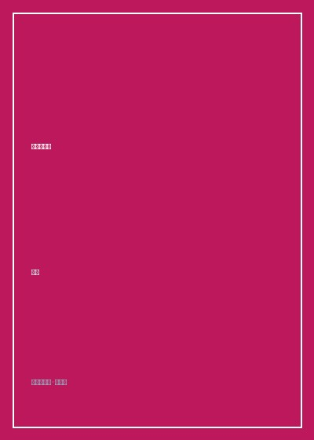

人间须尽欢

总体观点
在中国三千年的古典诗歌浩瀚银河中，李白是一颗永恒照亮华夏子孙精神暗夜的超新星。《人间须尽欢》是一部将李白生平传奇行脚与其传世代表诗篇融为一体的浪漫诗传总集。书名取自其千古名篇《将进酒》中的金句：“人生得意须尽欢，莫使金樽空对月。天生我材必有用，千金散尽还复来。”
全书以李白“入世建功立业”与“出世寻仙访道”这两股狂暴撕扯的精神内核为主线，完整还原了他二十四岁仗剑出蜀、漫游江南、奉诏入京让高力士脱靴、天宝之乱卷入永王幕府、流放夜郎直至当涂绝笔的波澜壮阔一生。李白以大鹏自比，打破了儒家文人谨小慎微、低眉顺眼的奴性规训，以天地为逆旅、光阴为百代过客，将生命的热烈、痛饮狂欢的洒脱与笑对命运无常的傲岸风骨，泼墨成了中国文明史上最绚烂的一抹盛唐华章。
核心观点
-
1. 大鹏展翅的狂放自信：天生我材必有用的绝对自我认同
李白从未自轻自贱，即使身处布衣寒微，亦敢以傲视王侯的从容姿态面对天下权贵，树立了中国文人独立人格的最高标杆。
在《上李邕》中面对名震天下的大官僚冷眼，青年李白拂袖冷笑：“宣父犹能畏后生，丈夫未可轻少年”，大鹏一日同风起的豪气扑面而来。 -
2. 人生得意须尽欢：用极致的当下痛饮消融万古愁苦
知晓生命的有限与世事的虚妄，因此绝不为虚名浮利拘束心神，在美酒、明月与知己相聚时倾注全部激情。
《将进酒》中“五花马，千金裘，呼儿将出换美酒，与尔同销万古愁”，把世俗功利抛诸脑后，在杯酒言欢中完成对虚无时光的浪漫反杀。 -
3. 安能摧眉折腰事权贵：御用文人金丝雀牢笼的决绝反叛
进入长安翰林院待诏后，看清唐玄宗不过将自己视作点缀盛世的宫廷弄臣，毅然辞官出京，守护不愿弯折的士人脊梁。
在《梦游天姥吟留别》结尾发出的千古长啸：“安能摧眉折腰事权贵，使我不得开心颜！”，为所有不愿出卖灵魂的知识分子立下不朽誓言。 -
4. 天地逆旅的万古孤独：举杯邀明月的三人醉舞
在所有喧嚣散尽的月夜，李白的孤独超越了具体的世俗得失，升华为独步宇宙、与天地共振的至高审美境界。
《月下独酌》中花间一壶酒，独酌无相亲，却奇思妙想“举杯邀明月，对影成三人”，把无边孤寂酿成了天人合一的浪漫狂欢。 -
5. 万重山已过的重生释怀：在苦难终局中保持明朗生机
即使年过花甲身陷牢狱流放蛮荒，一旦闻得大赦，立刻顺江而下，在青山猿声中重焕少年般的明朗快意。
《早发白帝城》中“两岸猿声啼不住，轻舟已过万重山”，以一叶扁舟冲破险滩峡谷的轻盈快意，给后世所有历经劫难者注入无尽希望。
全书思维导图 · 知识脉络树
全书结构
-
第一章 仗剑出蜀：大鹏一日同风起
记录四川大匡山隐居苦读、漫游三峡，写下《渡荆门送别》《蜀道难》名篇的少年英发时期。
细品《蜀道难》中“黄鹤之飞尚不得过，猿猱欲度愁攀援”的奇崛想象，感受李白笔下山川大地鬼斧神工的原始生命力。 -
第二章 金銮狂客：天子呼来不上船
奉诏进京入翰林院，醉草吓蛮书，力士脱靴贵妃捧砚，在长安盛世顶峰看透宫廷虚伪。
解读《清平调三首》与杜甫笔下“李白斗酒诗百篇，长安市上酒家眠，天子呼来不上船，自称臣是酒中仙”的绝代风流。 -
第三章 江湖浩荡：与尔同销万古愁
赐金放还离开长安，漫游黄河长江，登泰山游天姥，与杜甫高适同游梁宋，创作《将进酒》《梦游天姥吟留别》。
研读《将进酒》，体会诗仙在岑勋、丹丘生面前倾泻而出的黄河之水天上来、千金散尽还复来的宏伟气魄。 -
第四章 烽火流离：轻舟已过万重山
安史之乱爆发，李白投奔永王李璘兵败获罪流放夜郎，途中遇赦重获生机，写就千古名作。
精读《早发白帝城》《经乱离后天恩流夜郎》，在战火洗礼与死里逃生中体悟老诗仙坚忍不拔的生命韧性。 -
第五章 骑鲸捉月：诗仙永驻人间星河
晚年客死安徽当涂，民间传说其在采石矶江头醉酒跳江捉月骑鲸升天，谱写终极神话篇章。
品读绝笔诗《临终歌》：“大鹏飞兮振八裔，中天摧兮力不济”，在英雄末路的悲怆中见证一个伟大灵魂的不朽涅槃。